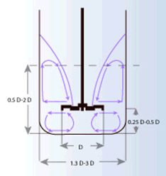

淺析紙品UV啞光油配方設計及生產工藝
返回頂部啞光效果因其外表時尚、高檔而越來越被人們所喜愛，下面淺談如何設定紙品UV啞光油配方及生產時工藝要求及注意事項。
一、啞光效果產生的原理
要獲得一個完美的啞光效果的條件是將所有的入射光散射開,否則，基材將會完全反射出光線，而形成光亮的外觀。UV啞光油輥塗後，經紫外線照射漆膜開始固化收縮，同時溶劑迅速揮發，漆膜變薄，消光粉分佈在整個漆膜表面形成微觀粗糙面，獲得了一個消光的漆膜。
二、UV啞光油配方設計
UV啞光油是由樹脂、單體、引發劑、消光粉、助劑及溶劑等組成，各組分的作用如下：
- 樹脂：樹脂是形成漆膜的主要成分，起到潤濕、分散及包裹消光粉作用。若樹脂選擇不當，將影響UV啞光油的主要性能。UV啞光油配方中應選擇粘度低、固化快、柔韌性好的樹脂，也可以多種樹脂搭配使用。
- 單體：單體起降粘度作用，選擇時應考慮稀釋效果及對固化速度的影響，可選擇HDDA、TPGDA、TMPTA等搭配使用。
- 引發劑：引發劑的作用非常重要，漆膜能否固化及固化是否完全取決於選擇的引發劑是否合適。UV啞光油配方中因有消光粉，固化速度要比亮光清漆慢且難幹透，所以在引發劑的選擇上要合適。
- 消光粉：UV啞光油配方中的消光粉一般為二氧化矽粉與蠟粉，在體系中起到消光的作用，同時起到耐磨、抗刮傷等作用。二氧化矽應選擇吸油量小、消光效果好的經過處理的二氧化矽；蠟粉應選擇透明度好的品種，如以聚乙烯、聚丙烯或聚四氟乙烯為基礎的蠟製品。
- 助劑：如流平劑、潤濕分散劑、消泡劑、防沉劑等。
- 溶劑：UV配方中應儘量避免使用揮發性有機溶劑。為追求適宜塗布的施工粘度和較低的塗膜光澤，可考慮適量添加有機溶劑。溶劑的沸點與用量直接影響塗膜光澤，設計配方時應統籌考慮環保與消光效果兩方面，綜合平衡。
三、生產時工藝要求及注意事項
1、如何分散消光粉
首先把樹脂及單體一同攪拌混合均勻，再分批加入消光粉，攪拌過程中加入潤濕分散劑，高速分散2小時（攪拌過程中溫度以不超過75℃為宜）。下圖為用高速分散機分散消光粉的示意圖：

2、如何控制消光粉的分散品質？
為獲得分散程度的資訊，有必要測量塗料的細度或赫格曼值（Hegmann value），另外，制樣板板測試光澤度（應在標準範圍內），目視漆膜外觀應光澤均勻。